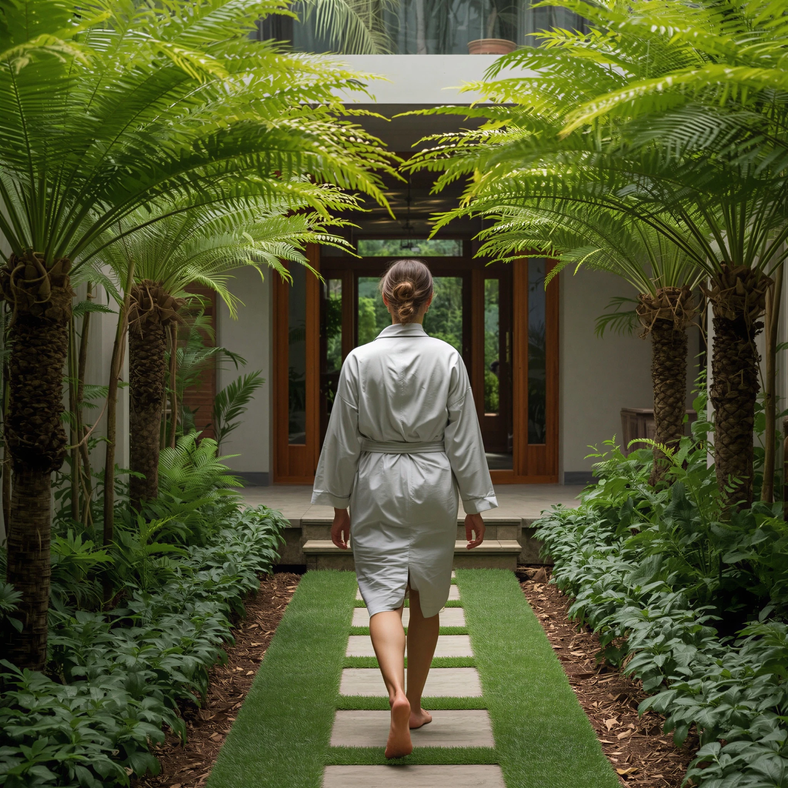
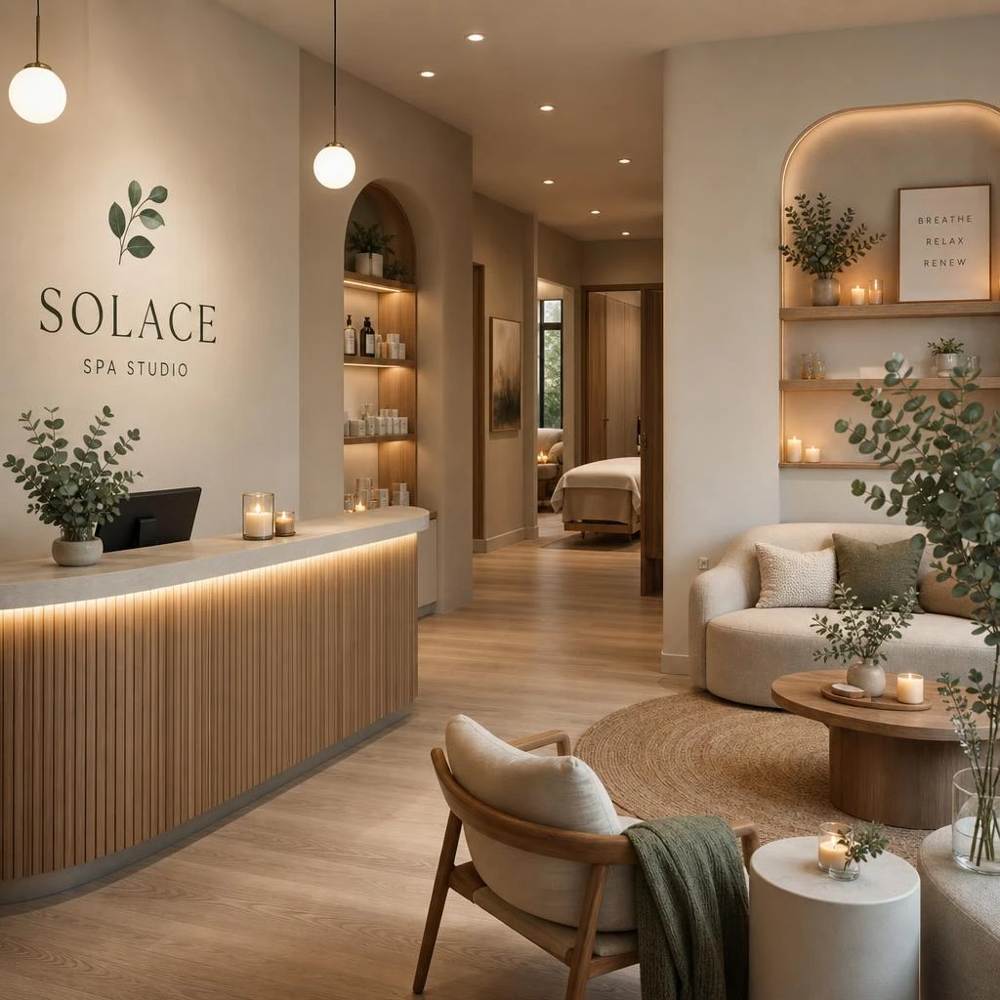
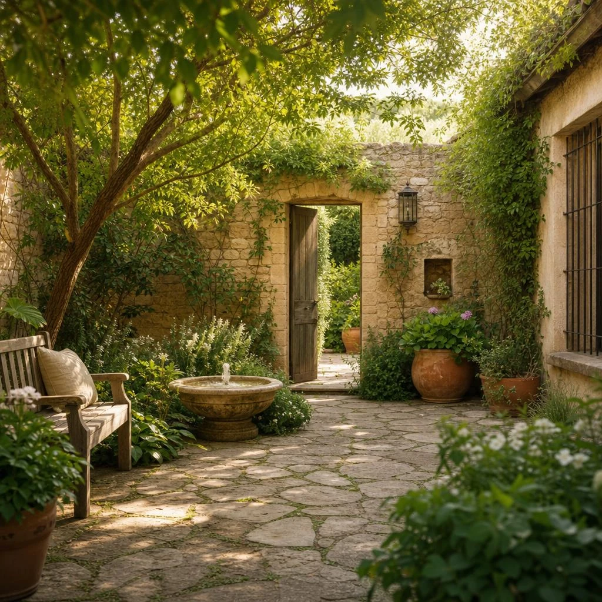
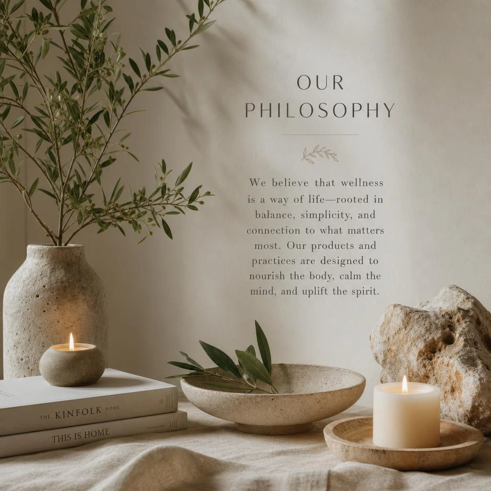

Our Story
A house for unhurried restoration.
Solace began with a simple wish: a room in Mill Valley where the nervous system could settle, and where beauty was allowed to stay quiet.
Established 2018
Grown from a single treatment room
Founder Elena Voss trained in Swedish and myofascial bodywork before opening a one-room practice above a garden shop on Miller Avenue. Guests asked for more time, more stillness, and a space that did not feel like a clinic. The studio moved to Fern Hollow in 2021.
Today Solace holds three treatment rooms, a tea alcove, and a small courtyard of ferns and stone. We keep the guest list intimate so that each appointment can begin with a proper pause — never a clipboard in the doorway.


Wellness Philosophy
Stillness as a practice
“We do not chase transformation. We make room for the body to remember how to rest.”
Our work is deliberately simple: warm hands, clean botanicals, and enough time. We believe luxury is the absence of hurry — linens that feel like they have been sunned, oils mixed in small batches, and therapists who listen before they work.
Nothing here is performative. There are no gold-leaf menus, no loud music, no treatments designed for photographs. If a guest leaves looking only a little softer, we consider the hour well spent.

The Rooms
Kept warm, kept quiet
Each treatment room is named for a local tree — Bay, Madrone, and Cedar — and holds only what is needed: a table, a basin, a low lamp, and a window to the garden.